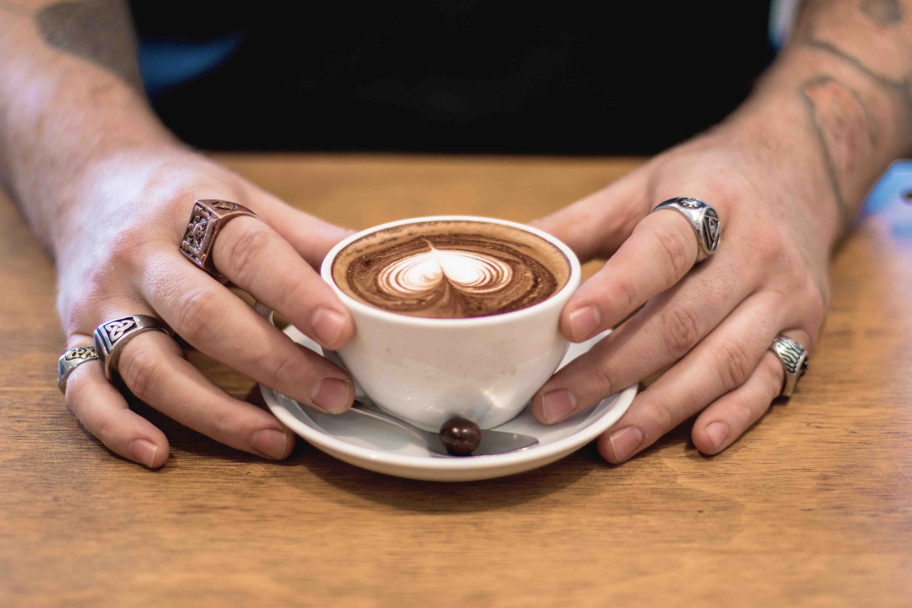
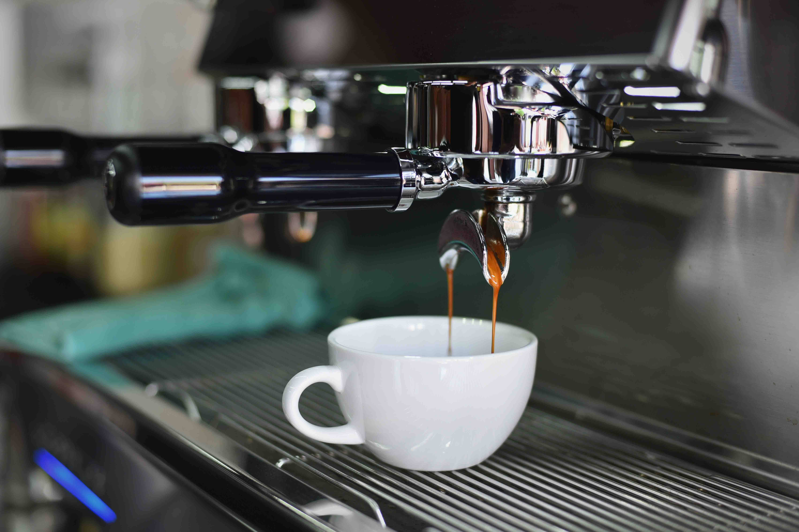

Vi er STREET COFFE
Mere end bare kaffe… Hos STREET COFFEE kan du komme i sutsko eller stiletter og med morgenhår eller hanekam - her handler det blot om god kaffe, god stemning og om at hygge sig. Intentionen er at skabe et rum udenfor hjemmet, hvor du kan mødes og ha' det sjovt, snakke alvorligt, finde nye venskaber eller forretningsrelationer eller bare koble fra. Alt imens du nyder sprøde toner fra grammofonen og spændende kunst på væggene.

Omhu og ildhu
Sæt du bare en plade på! står der med rød label på grammofonen. Det udtrykker perfekt den stemning, som de tre lokale kaffebarer emmer af. Her er der ikke blot kræset for kaffen, som bliver lavet med omhu og ildhu, men også kunderne bliver behandlet med en særlig uformel professionalisme. Du kan tage kaffen med, eller lade dig opsluge af en snak om musik, kaffe eller hvad der nu bliver snakket om - for snakket bliver der.
Kaffen i centrum
Kaffen er STREET COFFEE's rygrad. Den er solid, fyldig og rund, hvad enten du er til espresso, latte eller en plain sort kaffe. Kaffen kommer fra hele verden, men bliver ristet af et risteri i udkanten af London, med mange års erfaring i kunsten af at riste kaffe. Både kaffen og risteriet er nøje udvalgt og gør, at STREET COFFEE kan fokusere på at lave kaffe specielt til dig.
